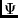
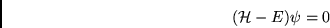
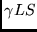
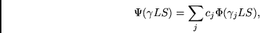

The main program nonh(), Fig. 5.6 starts with inita(), a library routine which initializes some of the basic constants of the program, including those which define the average energy of a configuration.
 |
Then, nonh determines the set of all
orbitals, and generates a list of all possible integrals
of both types (Slater and  ).
analy_blk reads the configuration list, cfg.inp and analyzes
the format of the configuration input data for the different blocks, determines
the number of blocks, the size of each block, and consistent ordering
of the electrons. orbitals processes additionally the
configuration list and determines the parameters of common closed
shells, allocates memory for the list of orbitals. After allocating
memory for the pointer and coefficient data (cn, inptr, nijptr,
jan, jbn, ico are arrays for buffering output data with size
genint first determines the number of integrals
and then allocates memory for the integrals.
).
analy_blk reads the configuration list, cfg.inp and analyzes
the format of the configuration input data for the different blocks, determines
the number of blocks, the size of each block, and consistent ordering
of the electrons. orbitals processes additionally the
configuration list and determines the parameters of common closed
shells, allocates memory for the list of orbitals. After allocating
memory for the pointer and coefficient data (cn, inptr, nijptr,
jan, jbn, ico are arrays for buffering output data with size
genint first determines the number of integrals
and then allocates memory for the integrals.
|  |
After initializing the main parameters nonh continues with the main loop for each block, and computes and stores on disk the data for the interaction matrix. For each block cfgblk initializes pointer data, verifies the consistency of the configurations in the list, (type of coupling, number of electrons for each shell).
Then, nonh proceeds with each LS term in the cfg.inp file. The output data consists of a one-dimensional list of coefficients,  or  (denoted by cn(j) in nonh, and coeff in mchf) and with each such coefficient there is associated an integral. The latter is specified by an integer, inptr(j) that indicates the position of the integral within the list of all possible integrals. In the generation of a matrix element, we then need to know where the data for a matrix element terminates. This is achieved by specifying the end position of a matrix element without the necessity of specifying the first, since it follows the last coefficient of the previous. This is the role of the array ico(i) which indicates the last position of the i'th non-zero matrix elements. Since only non-zero matrix elements are stored, another integer is needed to specify the value of the row index: jan(i) (ih(i) in mchf is the array containing this information. The data is collected and written to disk after LSDIM=30000 have been collected to memory. The last record for a given LS term will always contain less than LSDIM elements, possibly zero, if necessary. The value of LSDIM can be changed by changing four parameter statements.
|  |
The main loop of the program consists from shellsjb, angmomg which process the configuration lists by column. The interaction matrix is symmetric and only the lower or upper part needs to be evaluated. Respectively, the data for matrix elements are generated by column. Thus the computational process is:
For column = 1 to ncfg
For row = column to ncfg
compute matrix element
Only non-zero matrix elements are stored. This particular structure for the information was determined by conditions desired for mchf. This "large-scale" version of nonh was designed to compute matrix elements sequentially to facilitate sparse matrix representation of the interaction matrix and the use of Davidson's algorithm based on repeated matrix-vector multiplies.
nonh can process a list of configurations comprised by up to 20 terms. By default the list of configurations is kept in the file cfg.inp.
nonh requires an input file cfg.inp, and on successful run, it creates the following files (the configuration list, cfg.inpi, in the example below contains 3 blocks, 2P, 2D, 4P, therefore the number of generated ih.nn files is 3, one per block):
-rw-r--r-- 1 georgio georgio 252 Sep 20 00:35 cfg.h -rw-r--r-- 1 georgio georgio 114019 Sep 20 00:34 cfg.inp -rw-r--r-- 1 georgio georgio 6619380 Sep 20 00:35 c.lst -rw-r--r-- 1 georgio georgio 863484 Sep 20 00:35 ico.lst -rw-r--r-- 1 georgio georgio 393736 Sep 20 00:35 ih.01.lst -rw-r--r-- 1 georgio georgio 425988 Sep 20 00:35 ih.02.lst -rw-r--r-- 1 georgio georgio 43760 Sep 20 00:35 ih.03.lst -rw-r--r-- 1 georgio georgio 16760 Sep 20 00:35 yint.lstThe format of each file is described in 14.15. In general, the files can grow very large depending on the type of the electronic system, the number of configurations and type of angular data which is computed.